Funciones avanzadas de GMail
google
GMail
Funciones avanzadas para el uso diario (parte 2)
Apreta la tecla → para avanzar.

Envío de adjuntos de correo

Con las funciones de cloud computing cambia la manera de gestionar adjuntos de correo. Tenemos varias maneras de agregar un adjunto en nuestro envío.
- Como adjunto tradicional. Limitado a 25 megas.
- Como adjunto Google Drive. No hay límite de tamaño.
- Embeber imagen en el correo. Si vamos a enviar una imagen, podemos incrustar la imagen en el contenido del correo.
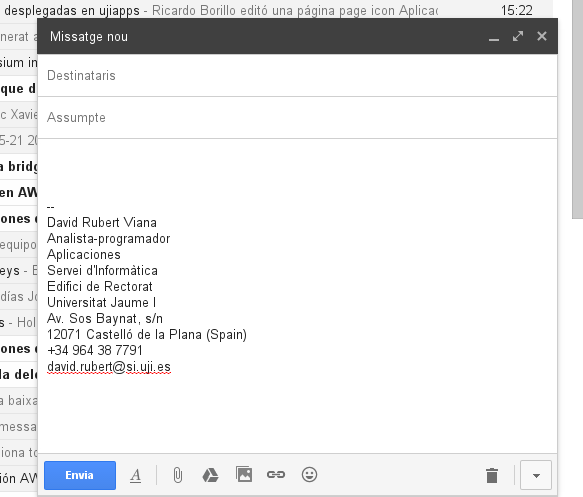
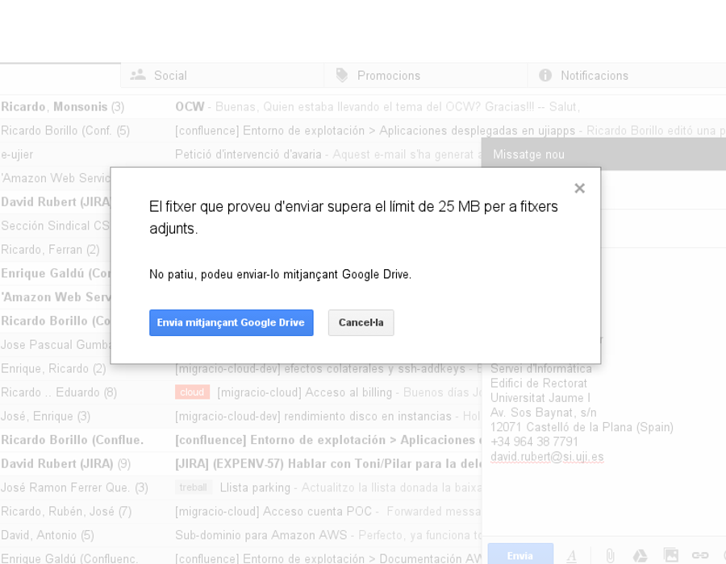
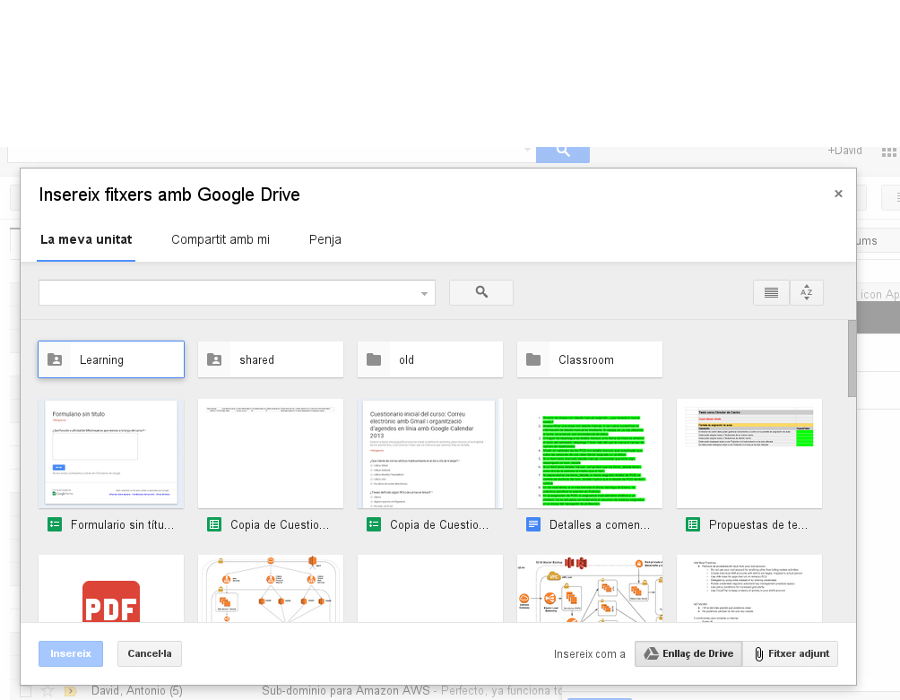
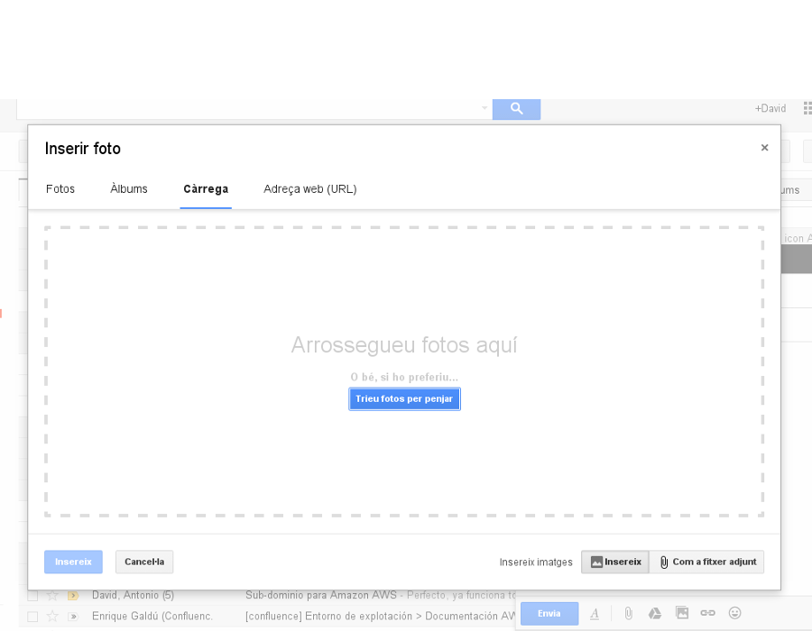
Cambia de foto con las teclas: ↑ y ↓
Conversaciones
GMail nos agrupa los e-mails en conversaciones. Recordemos cómo funcionan:
- Los mensajes nuevos se apilan al final de la conversación...
- La conversación se colapsa por defecto. Podemos expandir los mensajes de manera individual, o todos.
- La conversación se mantiene siempre que no se modifique el asunto.
Práctica
Adjuntos y conversaciones
Apreta la tecla → para avanzar.
Adjuntos y conversaciones

- Os voy a enviar un mail a toda la clase, al que me gustaría que me respondieráis cada uno de vosotros/as adjuntando una imagen que se visualice incrustada.
- La imagen tiene que ser un paisaje de playa o montaña que recomiendes para las próximas vacaciones
- Tenemos que recibirlo todos/as, así que no olvides apretar "Responder a todos".
Firma al pie y auto-respondedor
Apreta la tecla → para avanzar.
Firma al pie
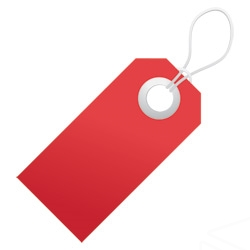
Es una práctica muy común adjuntar un pie de firma por cada uno de los correos que enviemos. Desde el Servei de Comunicacions nos proponen un estilo unificado de pie de firma, que podemos utilizar.
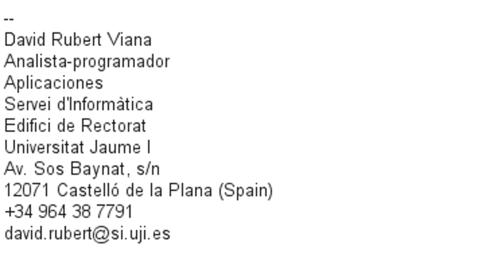
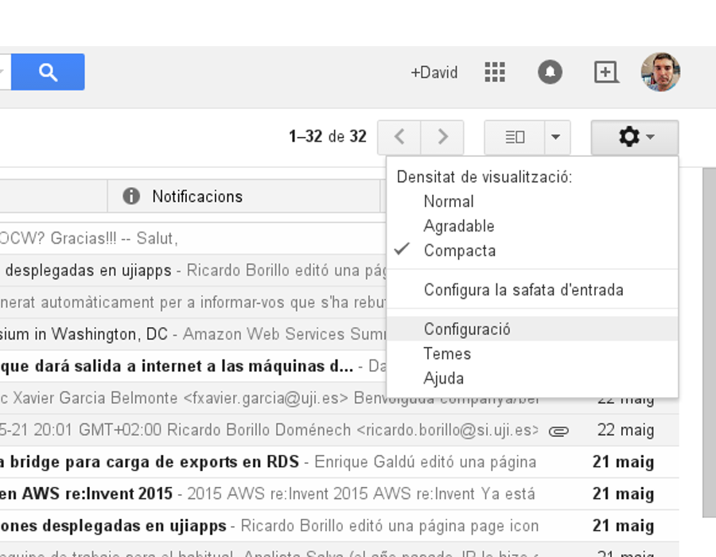
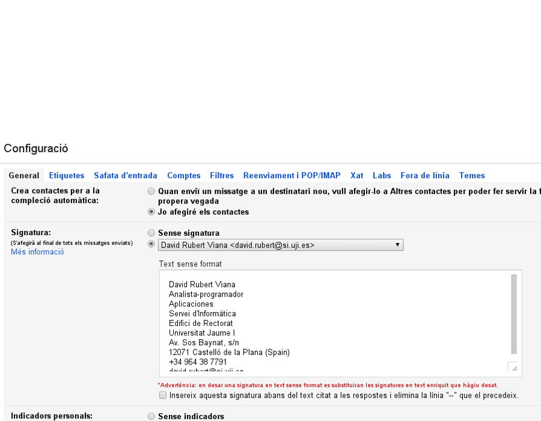
Apreta la tecla → para avanzar.
Auto-respondedor
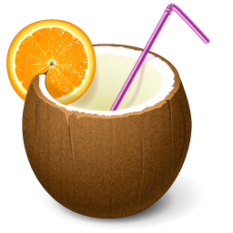
Un auto-respondedor es muy útil cuando vamos a estar una temporada de desconexión y queremos notificar a todo el que nos escriba que no estaremos operativos en una temporada.
- Enviará un mensaje previamente definido.
- Podemos elegir si responder a todos, o sólo a nuestros contactos, o sólo a gente de la UJI.
- Detectará si ya le hemos enviado un correo a esa persona.
- Detectará si el mail que recibimos es de una lista de correo, y no enviará respuesta en ese caso.
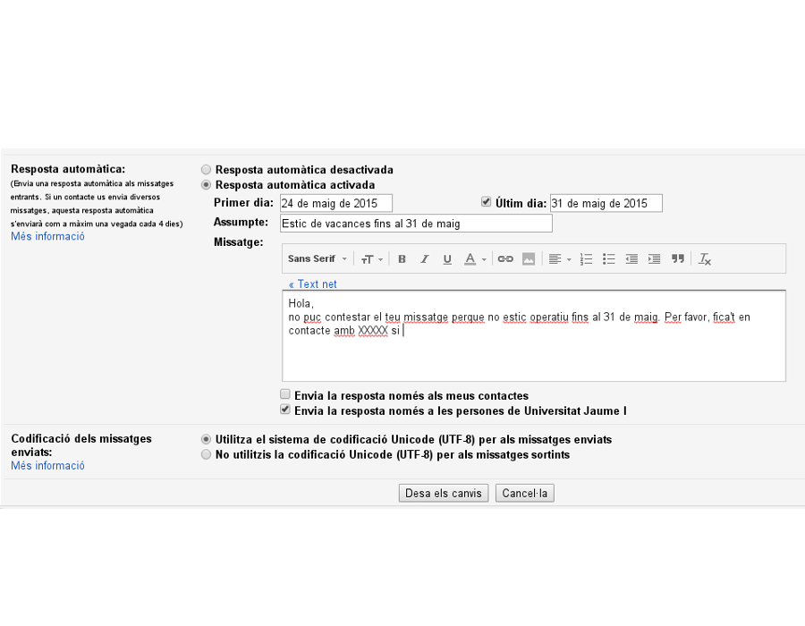
Apreta la tecla → para avanzar.
Identidades y reenvío
Apreta la tecla → para avanzar.
Identidades
Tal vez nos interese enviar correo con una mail diferente, como puede ser una dirección extendida, o un alias.
- Mi dirección: vrubert@uji.es.
- Mi dirección extendida: david.rubert@uji.es.
- Alias a los que pertenezco: aplicacions@uji.es.
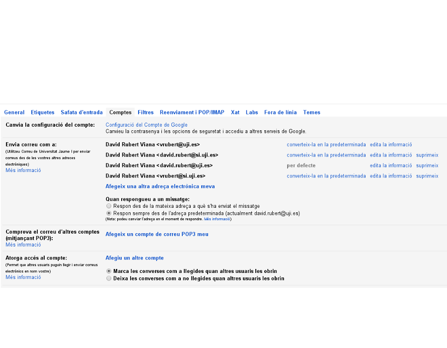
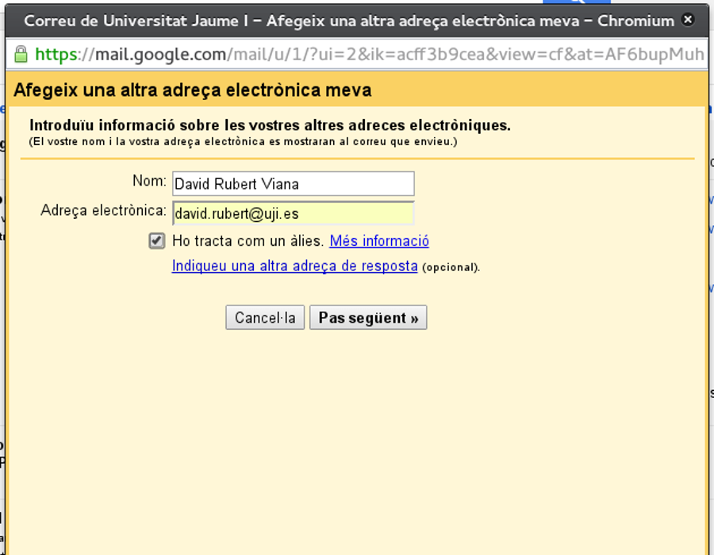
Apreta la tecla → para avanzar.
Auto-respondedor
Un auto-respondedor es muy útil cuando vamos a estar una temporada de desconexión y queremos notificar a todo el que nos escriba que no estaremos operativos en una temporada.
- Enviará un mensaje previamente definido.
- Podemos elegir si responder a todos, o sólo a nuestros contactos, o sólo a gente de la UJI.
- Detectará si ya le hemos enviado un correo a esa persona.
- Detectará si el mail que recibimos es de una lista de correo, y no enviará respuesta en ese caso.
Apreta la tecla → para avanzar.